KICH · RNA-seq: contagens brutas (GDC)
STAR - Counts (GENCODE v36) · gerado em 21/10/2026 22:18
63,8 Mtamanho mediano
0,47dispersão mediana α
16.704genes
66amostras tumorais
25amostras normais
0,0%valores faltantes
Fonte: API do GDC (STAR - Counts)
Principais resultados
- Bibliotecas de 33,8 a 76,7 milhões de leituras (mediana 63,8). 42.249 de 60.660 features têm leitura em pelo menos 10% das amostras.
- A variância cresce bem acima da média: a dispersão mediana da binomial negativa é α=0.47 (para features com média > 10). Isso descarta um modelo Poisson e indica binomial negativa (ou Poisson-lognormal) na verossimilhança.
- A fração de zeros é compatível com a binomial negativa (diferença mediana -0,1%); inflação de zeros não parece necessária.
- Em média 19,6% das leituras de cada amostra vão para as 20 features mais abundantes (MT-CO1, MT-ND4, MT-RNR2).
- Genes codificadores de proteína recebem 96,1% das leituras (mediana).
- 16.704 genes medidos em 91 amostras (66 tumorais e 25 normais); 0,0% dos valores estão faltando.
- Os dois primeiros componentes principais explicam 42,5% e 6,0% da variância das features mais variáveis.
- Correlação mediana entre amostras: 0,56.
- Tumor x normal: 12875 genes diferentes com FDR < 5% (3079 maiores no tumor, 9796 maiores no normal; 25 pacientes têm o par tumor-normal).
- Mais aumentados no tumor: ENSG00000142515.15, ENSG00000099822.3, ENSG00000124243.17, ENSG00000127561.15, ENSG00000174562.13, ENSG00000103253.19, ENSG00000234979.1, ENSG00000167749.11.
- Mais reduzidos no tumor: ENSG00000104332.12, ENSG00000125848.10, ENSG00000241158.7, ENSG00000134874.18, ENSG00000129295.9, ENSG00000064199.7, ENSG00000186409.18, ENSG00000228262.10.
- Associações clínicas com p < 0,05 nos componentes principais: PC2 com sobrevida (p=0.0079).
Biblioteca
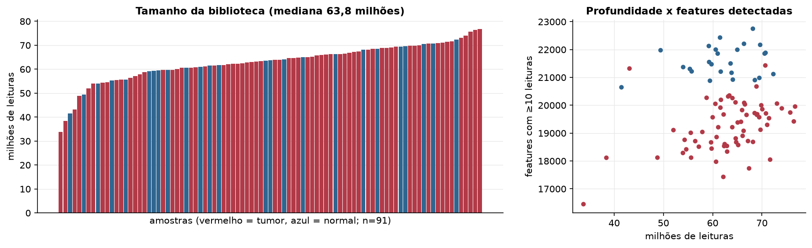
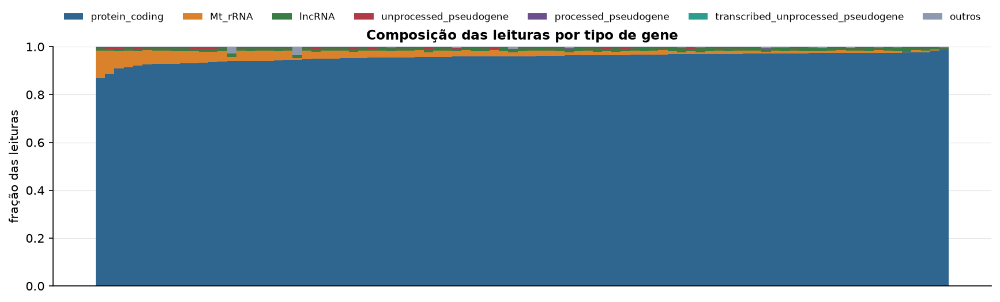
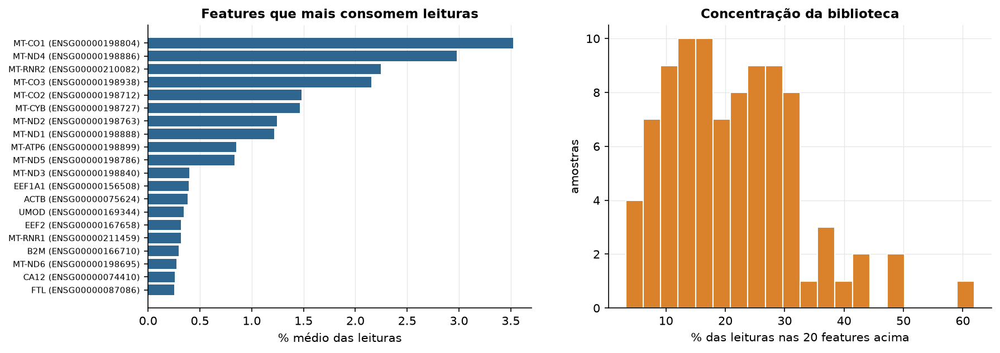
Sobredispersão e zeros
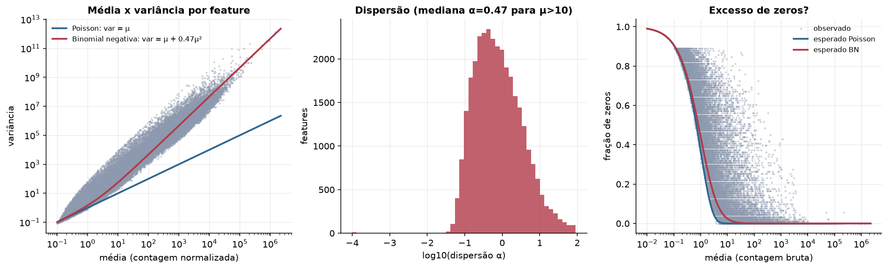
Exploração em log2(CPM+1)
Features com CPM ≥ 1 em pelo menos 20% das amostras (16.704 features).
Distribuição dos valores
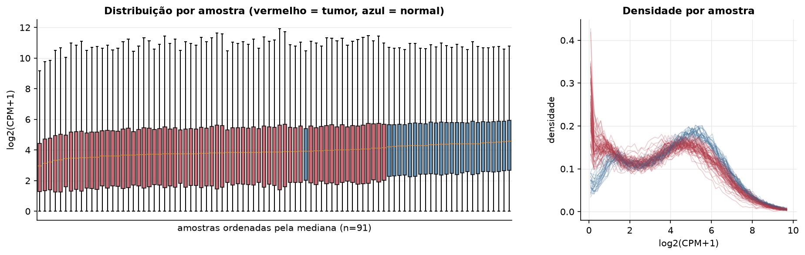
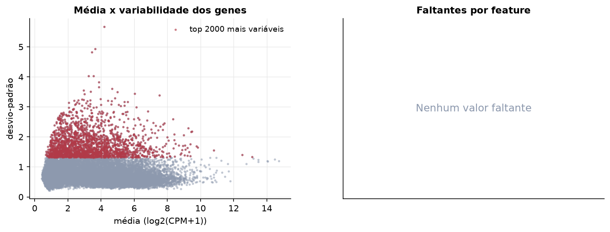
Estrutura das amostras
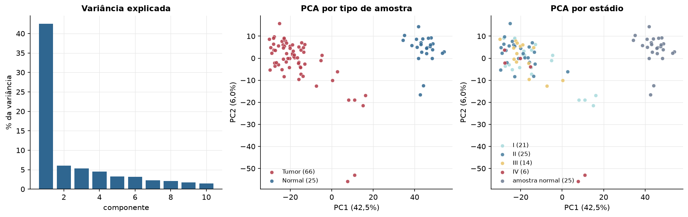
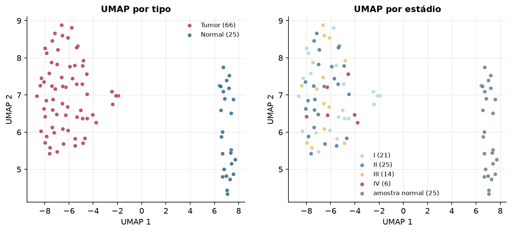
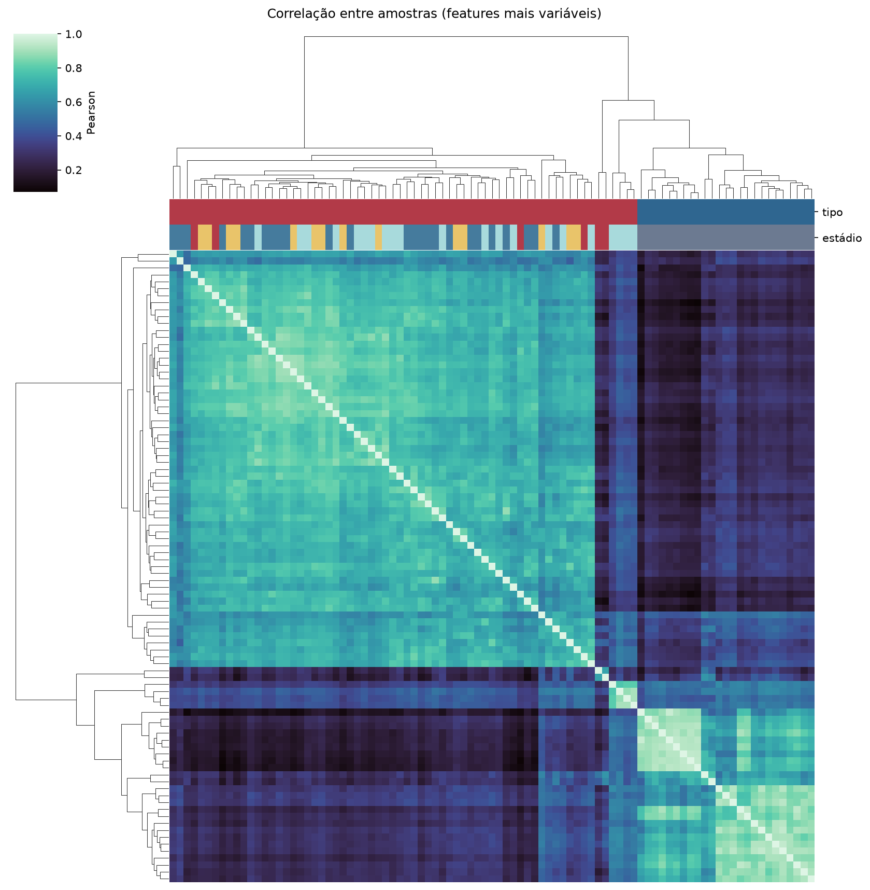
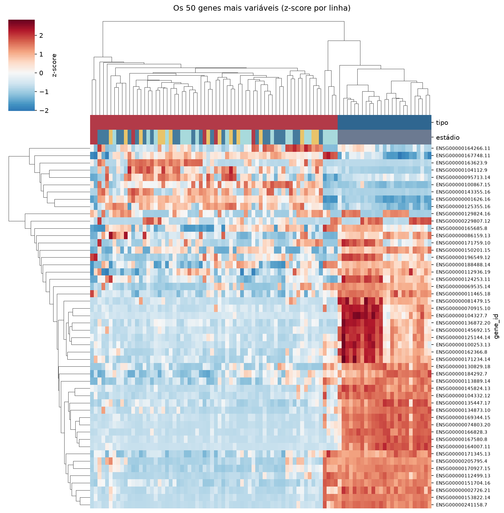
Tumor x normal
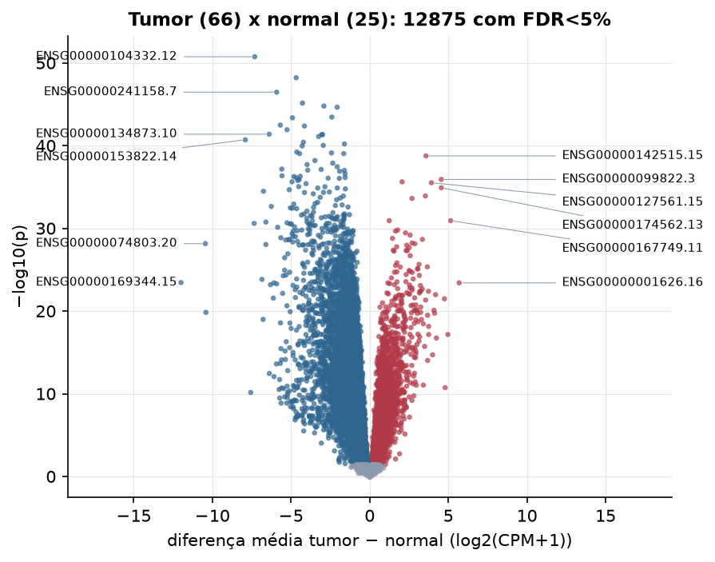
Features mais diferentes entre tumor e normal
| gene_id | diferenca_tumor_menos_normal | t | p | fdr |
|---|---|---|---|---|
| ENSG00000104332.12 | -7.309 | -33.868 | 1.82e-51 | 3.05e-47 |
| ENSG00000125848.10 | -4.676 | -31.755 | 6.29e-49 | 5.25e-45 |
| ENSG00000241158.7 | -5.913 | -29.11 | 3.51e-47 | 1.96e-43 |
| ENSG00000134874.18 | -4.273 | -30.951 | 7.35e-46 | 3.07e-42 |
| ENSG00000129295.9 | -2.911 | -27.745 | 1.65e-45 | 5.52e-42 |
| ENSG00000064199.7 | -2.071 | -27.74 | 2.3e-45 | 6.4e-42 |
| ENSG00000186409.18 | -2.404 | -26.973 | 3.6e-44 | 8.58e-41 |
| ENSG00000228262.10 | -4.912 | -26.65 | 4.38e-44 | 9.15e-41 |
| ENSG00000158089.15 | -5.683 | -25.961 | 3.36e-43 | 6.23e-40 |
| ENSG00000012504.15 | -4.147 | -25.836 | 4.29e-43 | 7.17e-40 |
| ENSG00000085563.15 | -5.253 | -27.201 | 1.21e-42 | 1.84e-39 |
| ENSG00000134873.10 | -6.386 | -28.113 | 4.19e-42 | 5.63e-39 |
| ENSG00000163879.11 | -2.986 | -25.057 | 4.66e-42 | 5.63e-39 |
| ENSG00000114670.14 | -3.055 | -27.02 | 4.72e-42 | 5.63e-39 |
| ENSG00000147394.18 | -3.248 | -25.019 | 8.02e-42 | 8.93e-39 |
| ENSG00000153822.14 | -7.907 | -27.598 | 1.98e-41 | 2.07e-38 |
| ENSG00000115457.10 | -4.213 | -29.043 | 3.95e-41 | 3.89e-38 |
| ENSG00000116885.18 | -1.603 | -24.35 | 6.39e-41 | 5.93e-38 |
| ENSG00000152763.17 | -2.951 | -32 | 9.34e-41 | 8.21e-38 |
| ENSG00000165443.12 | -4.289 | -24.039 | 1.09e-40 | 9.14e-38 |
| ENSG00000134258.17 | -4.633 | -30.174 | 6e-40 | 4.77e-37 |
| ENSG00000032742.18 | -2.427 | -23.558 | 7.68e-40 | 5.83e-37 |
| ENSG00000116151.14 | -1.651 | -23.469 | 9.28e-40 | 6.55e-37 |
| ENSG00000240583.13 | -4.453 | -23.952 | 9.41e-40 | 6.55e-37 |
| ENSG00000142515.15 | 3.581 | 24.599 | 1.75e-39 | 1.17e-36 |
| ENSG00000163075.13 | -3.481 | -23.011 | 6.44e-39 | 4.14e-36 |
| ENSG00000005448.17 | -2.347 | -22.583 | 1.32e-38 | 8.16e-36 |
| ENSG00000163406.11 | -3.98 | -25.618 | 1.96e-38 | 1.17e-35 |
| ENSG00000213625.9 | -2.064 | -22.508 | 3.6e-38 | 2.07e-35 |
| ENSG00000170927.15 | -5.585 | -23.26 | 6.94e-38 | 3.86e-35 |
Associação com variáveis clínicas
p-valores da associação dos três primeiros componentes principais (só tumores) com estádio (Kruskal-Wallis), sexo (Mann-Whitney), idade (Spearman) e sobrevida global (Cox univariado).
| estádio (Kruskal) | sexo (Mann-Whitney) | idade (Spearman) | sobrevida OS (Cox) | |
|---|---|---|---|---|
| PC1 (18,3%) | 0.113 | 0.273 | 0.08 | 0.642 |
| PC2 (9,0%) | 0.179 | 0.341 | 0.498 | 0.008 |
| PC3 (6,8%) | 0.068 | 0.938 | 0.824 | 0.266 |